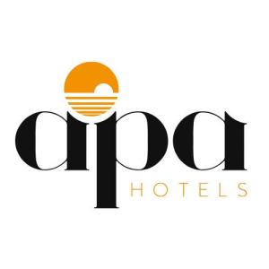

Società Canottieri Pesaro
Calata Caio Duilio 101, Pesaro
 Vedi mappa
Vedi mappa
Atleti · Società · Tecnici
Tutto quello che serve per organizzare la partecipazione ai Campionati Italiani Coastal Rowing 2026 di Pesaro.
Informazioni sportive
 Apri su Google MapsApri Bagni Tino su Google Maps
Apri su Google MapsApri Bagni Tino su Google Maps Federazione Italiana Canottaggio
Bando, programma gare, iscrizioni e risultati sono pubblicati dalla Federazione Italiana Canottaggio.
Bando di regata →
Programma gare e risultati →
Anteprima organizzativa
Programma gare provvisorio →
Federazione Italiana Canottaggio
Bando, programma gare, iscrizioni e risultati sono pubblicati dalla Federazione Italiana Canottaggio.
Bando di regata →
Programma gare e risultati →
Anteprima organizzativa
Programma gare provvisorio →
Sul mare
Schema indicativo dell'area di regata. Seleziona il percorso e passa su una boa per visualizzare e copiare le coordinate.

Seleziona il percorso e passa su una boa, oppure toccala, per visualizzare le coordinate WGS84 e copiarle. Tocca di nuovo il percorso attivo per deselezionarlo: in questo caso il PDF riporta tutte le boe. Le boe 1B, 3B e 4B del percorso PR3 II coincidono con boe già presenti e non sono duplicate; la boa 2B è mostrata separatamente.
| Punto | Latitudine | Longitudine | Azioni |
|---|---|---|---|
| Boa 1 | 43.925078 | 12.911786 | |
| Boa 2 | 43.917661 | 12.921034 | |
| Boa 3 | 43.915458 | 12.928506 | |
| Boa 4 | 43.908514 | 12.932058 | |
| Boa 5 | 43.913152 | 12.938790 | |
| Boa 6 | 43.921512 | 12.926385 | |
| Boa 7 | 43.922794 | 12.920195 | |
| Boa 8 | 43.927309 | 12.914683 | |
| Boa 2B | 43.921182 | 12.918135 | |
| Riferimento partenza/arrivo | 43.926242 | 12.913342 |

A terra
La mappa mostra le principali aree operative dell’evento, gli accessi e i servizi per atleti e società. La disposizione potrà subire variazioni organizzative prima della manifestazione.
Assistenza sul campo
Società Canottieri Pesaro
Calata Caio Duilio 101, Pesaro
Vedi mappa
Gli orari di apertura saranno pubblicati prima dell’evento.
Modalità, luogo e orari saranno indicati nelle comunicazioni ufficiali.
Soggiornare a Pesaro
In collaborazione con APA Hotels Pesaro sono disponibili strutture convenzionate e condizioni dedicate ad atleti, tecnici e accompagnatori.

Disponibili formule B&B e pensione completa, con camere singole, doppie e multiple. Categoria e disponibilità sono soggette a conferma.
La pensione completa parte da 57 € a persona/notte in hotel 3★ Cat. A. Consulta la scheda APA per tutte le tariffe, supplementi e condizioni.
Invia il modulo compilato ad APA Hotels:
commerciale@apahotel.it
+39 335 7061510
Scarica la scheda completa con tariffe, condizioni e modulo partecipanti.
Hai esigenze particolari? Per richieste specifiche sulla sistemazione, gruppi numerosi o altre necessità, contatta direttamente APA Hotels Pesaro tramite i recapiti indicati sopra.
Raggiungere Pesaro
Il casello dista circa 7,5 km dall’area dell’evento.
Apri in Google Maps
La stazione ferroviaria dista circa 2,5 km.
Ancona circa 70 km · Bologna circa 160 km.
Le aree dedicate ad autovetture, furgoni e carrelli barche sono indicate nella mappa logistica →
Serve aiuto?
Il nostro staff è a disposizione per le informazioni locali relative alla partecipazione all’evento.